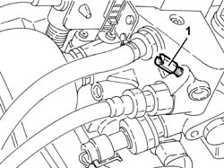
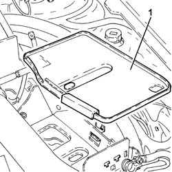
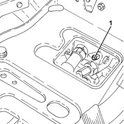

2127C06 Electro-hydraulic selection manual gearbox HYDRAULIC SYSTEM - Bleeding air
- Path
- Procedures > 21 GEARBOX > 2127 ELECTRO-HYDRAULIC SELECTION. GEARBOX EXTERNAL. CONTROLS > 2127C hydraulic gear selection system > 2127C06 Electro-hydraulic selection manual gearbox HYDRAULIC SYSTEM - Bleeding air
- Kind
- repair procedure (removal / refitting; the operation number is the code)
- Applies to
- all engines; all production periods
- Interactive page
- https://sloeber94.github.io/elrnDB-a156/en/#/3237944
Applies to: all engines; all production periods; only with equipment: Smart gearbox
5530B52 Battery DRIP TRAY/SUPPORT - R.R. .
Supply the vehicle using an auxiliary battery.
1. Loosen the bleed screw on the electro-hydraulic selection hydrauilc unit.
Operate the electric pump for 20 seconds until the air is completely expelled.
Tighten the bleed screw to the recommended torque.
 | Fastening | Component | Ø | Value (daNm) |
|---|---|---|---|---|
- | - | BLEED SCREW | M6 | 0.45 ÷ 0.55 |

Applies to: all engines; all production periods; only with equipment: Smart gearbox
Connect the Examiner diagnostic equipment.
Keep the brake pedal depressed.
Select 'Alf 156 Selespeed' on the Examiner.
Select 'Control Unit Test' on the Examiner and select the 'Marelli Selespeed Automatic Transmission'.
Press 'Active Diagnosis' on the Examiner and select 'Clutch bleeding'.
Continue with the procedure on the Examiner.
Disconnect the auxiliary battery.
Applies to: engines: 2.0 JTS, 2.0 JTS; all production periods; only with equipment: Smart gearbox
Proceed with removal 5530B10 battery - r+r .
1. Remove the collection tray from the battery drip tray.

Applies to: engines: 2.0 JTS, 2.0 JTS; all production periods; only with equipment: Smart gearbox
Supply the vehicle using an auxiliary battery.
1. Loosen the bleed screw on the electro-hydraulic selection hydrauilc unit.
Operate the electric pump for 20 seconds until the air is completely expelled.
Tighten the bleed screw to the recommended torque.
| Fastening | Component | Ø | Value (daNm) |
|---|---|---|---|---|
- | - | BLEED SCREW | M6 | 0.45 ÷ 0.55 |

Applies to: engines: 2.0 JTS, 2.0 JTS; all production periods; only with equipment: Smart gearbox
Connect the Examiner diagnostic equipment.
Select 'Alfa Selespeed' on the Examiner.
Select 'Control Unit Test' on the Examiner and select the 'Marelli Selespeed Automatic Transmission'.
Press 'Active Diagnosis' on the Examiner and select 'Clutch bleeding'.
Continue with the procedure on the Examiner.
Disconnect the auxiliary battery.
Place the collection tray back in its housing in the battery drip tray.
Proceed with refitting 5530B10 battery - r+r .
Topics linked from this page (2)
Topics that link to this page (14)
- 0010T40 hydraulic system for gearbox with hydraulic selection bleed air
- 1004B24 power unit with manual gearbox with hydraulic selection - r r
- 1020D36 flywheel end oil seal - replace for manual gearbox with hydraulic selection versions
- 1024B11 engine flywheel - r r for manual gearbox with hydraulic selection versions
- 1810A28 clutch - r r for manual gearbox with hydraulic selection versions
- 2110A11 manual gearbox with differential - r r for versions with hydraulic selection
- 2110C24 seals for gearbox input shaft - r r for manual gearbox with hydraulic selection versions
- 2127C10 support for hydraulic circuit reservoir and system pump - r r
- 2127C18 pipe from hydraulic circuit fluid reservoir to hydraulic speed selection drive pump - r r
- 2127C20 pipe frompump to hydraulic speed selection actuator unit - r r
- 2127C22 pipe from hydraulic speed selection actuator unit to fluid reservoir - r r
- 2127C30 hydraulic speed selection system pump - r r
- 2127C40 hydraulic speed selection hydraulic actuator unit and clutch - r r
- 2127E50 hydraulic selection gearbox circuit pressure sensor - r r